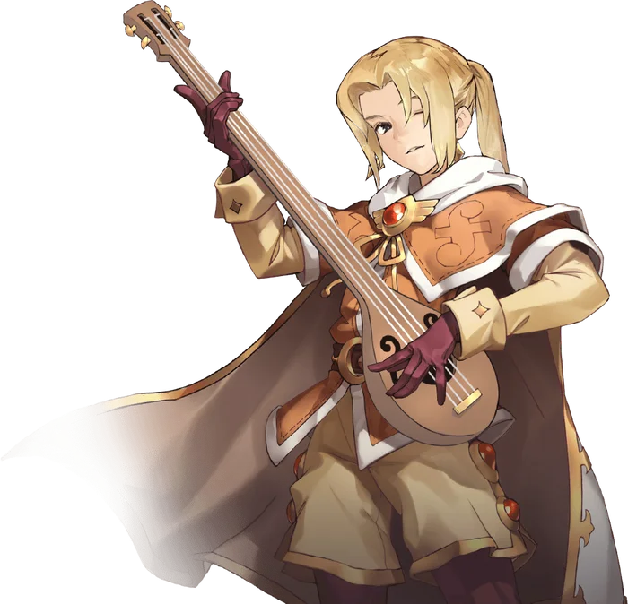
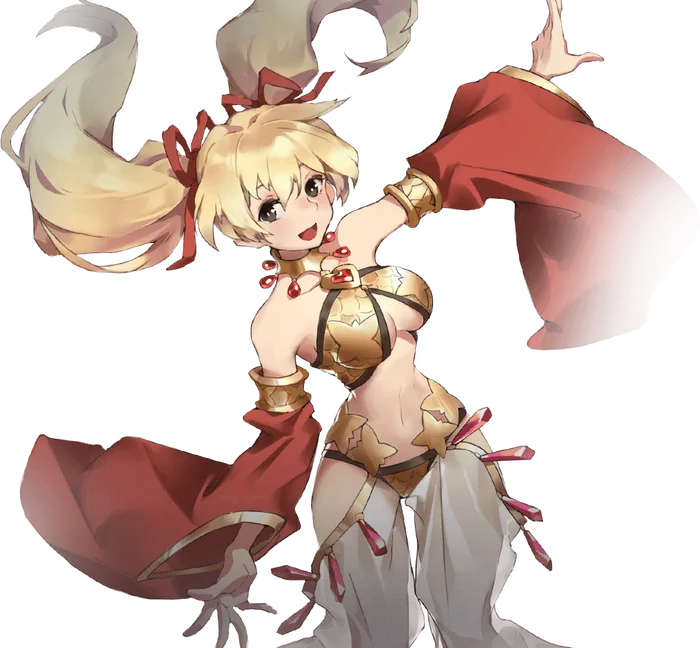

Second tier
Bard and Dancer
Bard and Dancer are the secondary advancement options for Archers. Setting aside their bows, the two performer classes opt for a much more challenging playstyle: it's not good enough to just deal damage, the damage has to be dealt with style!
Much of the Bard and Dancer kits are shared, as is their core mechanic: Rhythm. Bards and Dancers have a Rhythm Level which is constantly displayed above their heads, except when it's at zero, to "rate" their performance. Every time the performer uses a Performance skill, it will either increase or decrease their Rhythm level, based on whether the current Rhythm Level is even or odd, capping at 5. Together with a large number of skills at their disposal, this mechanic makes playing a performer quite a handful, as skill cooldowns, positioning, and rhythm level all need to be kept in mind...not to mention actually finding opportunities to put out damage.
To aid in maintaining Rhythm levels, Bards and Dancers get access to the skills Synchronic Strike and Vicious Verse, dealing physical and magical damage respectively, that not only improve based on the active Rhythm Level, but also serve to extend the duration of the current Rhythm Level by a small amount. This allows them to keep contributing damage even while most of their focus is concentrated on their more supportive Performance skills.
In order to generate these Rhythm levels in the first place, Bards and Dancers each have four unique Performance skills: two designed to support the user and their party, and two designed to harm or inhibit enemies. In addition, they have three shared Finale skills, which when used set the user's Rhythm Level to zero, but provide huge buffs , or in one case, huge damage , based on the Rhythm Level before it was reset.
All in all, Bards and Dancers are potentially the most complex class to play. The reward for mastering that complexity is a class that possesses both incredible support capabilities and excellent damage output.
Bard Only Skills


Where it sits
Skill list
Skills
Grouped the way the tree is grouped. Names, types and level caps come from the player wiki, so they match what you see in game.
Bard Skills5 skills
-
Musical MasteryPassiveLv 10
Increases damage and Hit with Instruments; extends Rhythm duration.
Increases the Hit Rate and Damage of Instruments, and increases the duration of Rhythm stacks gained. Instruments typically gain Reduced SP Consumption as a mastery bonus.
-
Restorative RefrainSongLv 5
Party AoE heal over time. Odd Rhythm.
Plays a gentle song to encourage and reinvigorate the party, healing all party members a small amount over time. If the current Rhythm Level is Odd, it is increased by 1. Otherwise, it is decreased by 1.
-
Quickening ChorusSongLv 5
Reduces party Variable Cast Time. Even Rhythm.
Plays an energetic song to inspire the party to quick action. Reduces the Variable Cast Time of all skills cast by each party member significantly. If cast while the current Rhythm Level is even or zero, it is increased by 1. Otherwise, it is decreased by 1.
-
Darkening DirgeSongLv 5
Inflicts Blind on approaching enemies. Odd Rhythm.
Plays a haunting melody to cloud the minds, and eyes, of enemies. Has a high chance to inflict the Blind status to all enemies in an enormous area. If the current Rhythm Level is odd, it is increased by 1. Otherwise, it is decreased by 1.
-
Enervating ElegySongLv 5
Inflicts Vulnerable and Breach on approaching enemies. Even Rhythm.
Plays an eerie tune that saps the energy from enemies, leaving them weak and vulnerable. Inflicts the Vulnerable and Breach Statuses on all enemies in the area. If the current Rhythm Level is even or zero, it is increased by 1. Otherwise, it is decreased by 1.
Dancer Only Skills
Dancer Skills5 skills
-
Dancing DexterityPassiveLv 10
Increases damage and Hit with Whips; extends Rhythm duration.
Increases the Hit Rate and Damage of Whips, and increases the duration of Rhythm stacks gained. Whips typically gain Reduced SP Consumption as a mastery bonus.
-
Noetic NumberDanceLv 5
Party AoE SP restoration over time. Odd Rhythm.
The user performs an edifying dance, restoring SP to the party over a short period of time. If the current Rhythm level is odd, it is increased by 1. Otherwise, it is decreased by 1.
-
Savage StrideDanceLv 5
Massively increases party Crit Rate. Even Rhythm.
The user performs a savagely beautiful dance, inspiring the party to acts of great violence. Provides a massive boost to Crit Rate for a short duration. If the current Rhythm Level is even or zero, it is increased by 1. Otherwise, it is decreased by 1.
-
Wearying WaltzDanceLv 5
Inflicts Slow on approaching enemies. Odd Rhythm.
The user performs a strangely enervating dance, attempting to Slow all enemies in the area. If the current Rhythm level is odd, it is increased by 1. Otherwise, it is decreased by 1.
-
Sinister SaunterDanceLv 5
Increases damage taken by nearby enemies. Even Rhythm.
The user performs an alluring dance, distracting enemies into letting down their guard. All enemies in the area take increased damage for a short period of time. If the current Rhythm Level is even or zero, it is increased by 1. Otherwise, it is decreased by 1.
Shared Skills
Shared Skills5 skills
-
Synchronic StrikePhysicalLv 10
Ranged attack that scales with and extends Rhythm.
Uses the Instrument or Whip to throw a volley of arrows at a distant target, carefully timed to synchronize with their performance. Deals increased damage based on the currently active Rhythm level, and increases its duration slightly.
-
Vicious VerseMagicalLv 10
Magic attack that scales with and extends Rhythm.
The user recites an enchanted verse laced with deadly magic to harm their enemies without breaking the rhythm of their performance. Deals magic damage to the target, which is increased by the current Rhythm Level, and slightly increases its duration.
-
Hero's HymnPerformanceLv 10
Finale: consumes Rhythm for massive offense and defense buffs.
The user sings a majestic song to steel the party's resolve, consuming all Rhythm stacks to provide massive buffs to Attack, Magic Attack, Defense, and Magic Defense for the duration. The duration of the buff is based on the number of Rhythm Stacks consumed. Does not stack with Ardent Anthem.
Works withArdent Anthem
-
Ardent AnthemPerformanceLv 10
Finale: consumes Rhythm for Movement Speed, Flee, and Perfect Dodge buffs.
The user sings an energizing melody, inspiring their party to quicker and safer movement. Consumes all of the user's Rhythm stacks to give massive boosts to Movement Speed, Flee, and Perfect Dodge to the whole party. The duration of the buff is based on the number of Rhythm Stacks consumed. Does not stack with Hero's Hymn.
Works withHero's Hymn
-
Devastating DescantPerformanceLv 10
Finale: consumes Rhythm for a massive Hybrid damage AoE.
The user infuses their voice with destructive power and screams, consuming all Rhythm stacks to deal massive hybrid-type damage to all enemies in the area around them. The damage dealt is heavily influenced by the number of Rhythm stacks consumed.
From the players
See it played
No videos for this class yet. Record your gameplay and post it in the Discord.
Come find out what changed
Make an account now, grab the client, and be there when the servers go up.